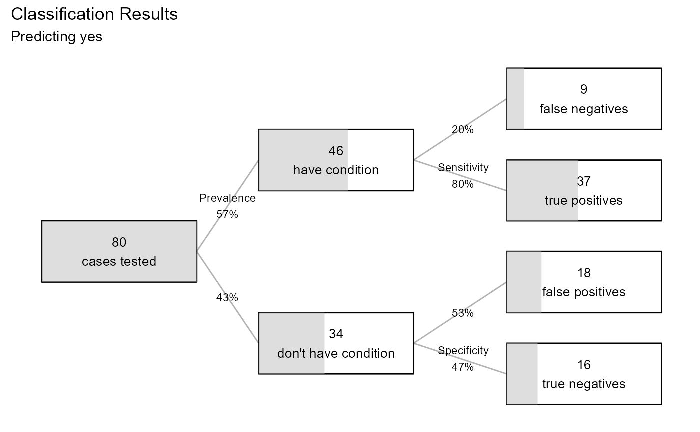

performance.RdIndices of model performance for linear and logistic regression models. The output depends on the form of the model (linear or logistic regression).
performance(x, ...)an object of type "lm" or "glm".
further arguments passed to or from other methods.
The results of the methods performance.lm or
performance.glm
The performance function can be used to evaluate the predictive
performance of a model with new data. If a data frame is not
specified, the performance is evaluated on the training data
(i.e., the data contained in the model component of the lm or
glm object).
#######################
# multiple regression #
#######################
fit <- lm(mpg ~ hp + wt + accel + origin, data = auto_mpg)
performance(fit)
#> Multiple Regression Performance
#> Data: auto_mpg
#> N: 388
#>
#> Model: lm(formula = mpg ~ hp + wt + accel + origin, data = auto_mpg)
#>
#> RMSE Rsquared MAE
#> 4.1385 0.7184 3.1518
#######################
# logistic regression #
#######################
fit2 <- glm(caesarian ~ age + bp + delivery.time, family = binomial, data = caesarian)
performance(fit2)
#> LOGISTIC REGRESSION PERFORMANCE
#> Data : caesarian
#> N : 80
#> Response variable : caesarian
#> Category Balance : no (0.42%) yes (0.58%)
#> Predicted category: yes
#> Prob to classify : >=0.5
#>
#> Model: glm(caesarian ~ age + bp + delivery.time,
#> family = binomial, data = caesarian)
#>
#> Confusion Matrix
#>
#> Actual
#> Predicted no yes
#> no 16 9
#> yes 18 37
#>
#> Overall Statistics
#>
#> Accuracy: 0.6625
#> 97% CI : (0.5481, 0.7645)
#> No Information Rate: 0.575
#> P-Value [Acc > NIR]: 0.06961
#>
#> Statistics by Category
#>
#> Sensitivity 0.8043
#> Specificity 0.4706
#> Pos Pred Value 0.6727
#> Neg Pred Value 0.6400
#> F1 0.7327
#> ---
#> Note: recall = sensitivity,
#> precision = pos pred value.
